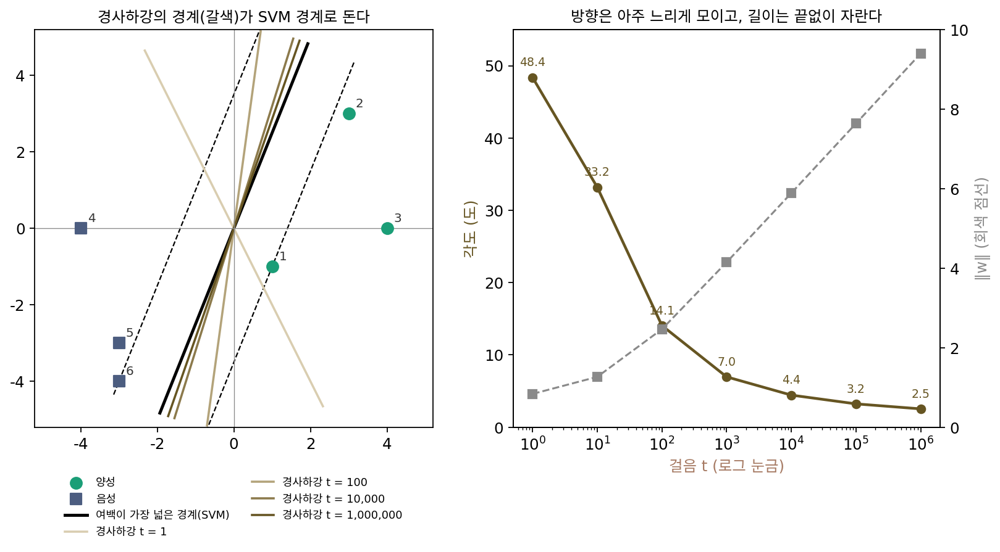

가장 큰 마진: 로지스틱 회귀의 방향이 고르는 경계
최소 노름 해는 손실이 0이 되는 해 가운데 하나를 골랐지만, 분류 문제에서는 손실이 0이 되는 해가 아예 없다. 로지스틱 회귀의 손실 log(1 + e⁻ᶻ)(z는 정답 쪽 점수)는 점수가 아무리 커도 0이 되지 않는다. 양성과 음성 두 부류의 점을 한 직선으로 깨끗이 가를 수 있으면, 경사하강은 가르는 방향으로 가중치를 키우고 또 키운다. 가중치의 길이는 끝없이 자라고 손실은 0에 다가갈 뿐 닿지 않으니, 길이가 끝없이 자라는 가중치에 「도착점」은 없다. 그렇다면 그 가중치가 가리키는 방향, 곧 경계선은 어딘가로 모일까?
역사: 오래 학습할수록 좋아지는 시험 정확도
두 부류를 가르는 직선 가운데 양쪽에서 가장 가까운 점까지의 거리, 곧 마진(margin)이 가장 넓은 직선을 고르는 방법이 서포트 벡터 머신(SVM)이다. 베른하르트 보저, 이자벨 기용, 블라디미르 바프니크가 1992년에 이 직선을 학습시키는 알고리즘을 냈다. SVM은 「마진을 넓혀라」를 목적함수에 직접 적는다.
2017년 10월, 다니엘 수드리(Daniel Soudry)는 엘라드 호퍼, 모르 슈피겔 낙손, 수리야 구나세카르(Suriya Gunasekar), 네이선 스레브로(Nathan Srebro)와 함께 쓴 논문을 공개했다(이듬해 ICLR과 기계학습 연구 저널 JMLR에 실렸다). 논문의 제목은 「분리 가능한 데이터에서 경사하강의 암묵적 편향(The Implicit Bias of Gradient Descent on Separable Data)」이다. 그들이 붙든 현상은 학습 오차가 0이 된 뒤에도 학습을 계속하면 시험 성능이 조금씩 더 좋아지는 일이었고, 그들은 선형 분류기에서 왜 그런 일이 생기는지를 증명했다. 분리 가능한 데이터에 로지스틱 손실로 경사하강을 하면, 가중치의 방향은 마진을 목적함수에 적지 않았는데도 SVM의 방향으로 모인다. 다만 스텝 수가 늘 때 방향이 SVM 방향으로 다가가는 속도는 손실이 줄어드는 속도에 비해 로그 꼴로 아주 느리다. 그들은 검증 손실이 다시 오르기 시작하는 때에도 학습을 계속하는 것이 이득일 수 있다고 적었다.
같은 해 구나세카르와 스레브로는 블레이크 우드워스, 스리나드 보자나팔리, 베남 네이샤부르와 함께 「행렬 분해의 암묵적 정규화」를 냈다(NeurIPS 2017). 행렬을 두 행렬의 곱으로 놓고 0 근처에서 경사하강을 하면, 해가 여럿인 문제에서 핵 노름(특잇값의 합)이 가장 작은 해로 가는 것 같다는 추측과 그 근거였다. 「옵티마이저가 해를 고른다」는 물음이 선형 회귀 밖으로 번지기 시작한 것이다.
점 여섯 개를 가르는 직선
평면 위에 양성 점 셋 (1, −1), (3, 3), (4, 0)과 음성 점 셋 (−4, 0), (−3, −3), (−3, −4)가 있다. 계산을 줄이려고 원점을 지나는 직선만 생각한다(절편 없음). 가중치 w가 정해지면 경계선은 w에 수직인 직선이고, 점 하나의 정답 쪽 점수는 yᵢw·xᵢ(양성은 y = 1, 음성은 −1)다. 처음 몇 스텝의 방향과 마진이 가장 넓은 방향이 크게 다르게 놓이도록 이 점들을 골랐다. 먼 점들 (3, 3), (4, 0), (−4, 0)이 첫 스텝을 끌어당기지만, 경계에 가장 가까운 점은 (1, −1)과 (−3, −4)다.
마진이 가장 넓은 직선은 w* = (0.7143, −0.2857) 방향이고 마진은 1.2999다. 0에서 출발해 학습률 0.5로 로지스틱 회귀의 경사하강을 백만 스텝 돌리며 방향을 재 보자. 정규화한 마진은 가장 가까운 점의 점수를 w의 길이로 나눈 것이다.
| 스텝 t | ‖w‖ | SVM 방향과의 각도 | 정규화한 마진 | 손실 |
|---|---|---|---|---|
| 1 | 0.8385 | 48.37° | 0.4472 | 0.1185 |
| 10 | 1.2673 | 33.19° | 0.7828 | 0.0601 |
| 100 | 2.4666 | 14.06° | 1.1256 | 0.0111 |
| 1,000 | 4.1488 | 6.97° | 1.2227 | 0.00116 |
| 10,000 | 5.8879 | 4.45° | 1.2528 | 1.16 × 10⁻⁴ |
| 100,000 | 7.6385 | 3.23° | 1.2664 | 1.17 × 10⁻⁵ |
| 1,000,000 | 9.3973 | 2.54° | 1.2739 | 1.18 × 10⁻⁶ |
첫 스텝은 SVM 방향과 48°나 어긋나 있다. 첫 스텝의 방향은 여섯 점의 yᵢxᵢ를 고르게 평균 낸 (3, 1.5) 쪽이라 먼 점들의 목소리가 크다. 스텝이 쌓이면서 각도는 33°, 14°, 7°로 줄고, 정규화한 마진은 SVM의 1.2999로 올라간다. 그러나 방향이 모이는 속도를 보자. 스텝 수를 열 배씩 늘려도 각도는 4.45°, 3.23°, 2.54°로 조금씩만 준다. 길이 ‖w‖도 1,000스텝 뒤로는 스텝 수가 열 배가 될 때마다 1.68, 1.74, 1.75, 1.76씩만 늘어, 스텝 수의 로그에 비례해 자란다. 손실은 스텝 수가 열 배면 열 배 작아지는데, 방향은 그만큼 빨리 모이지 않는다.
왜 하필 SVM 방향일까? 길이가 커질수록 점마다 그래디언트에 실리는 무게가 점수에 대해 지수 꼴로 줄기 때문이다. 점수가 큰 점, 곧 경계에서 먼 점은 무게가 먼저 사라지고, 끝까지 남는 것은 점수가 가장 작은 점들이다. 그 점들만 보고 방향을 고르면 가장 가까운 점까지의 거리를 가장 넓히는 방향, 곧 SVM 방향이 된다. 무게가 어떻게 사라지는지는 아래 문제 5에서 직접 센다.
분리 가능한 데이터에서 로지스틱 손실의 경사하강이 가리키는 방향이 마진이 가장 넓은 SVM 방향으로 모이는 성질을 최대 마진 편향 (방향이 가장 넓은 마진으로 / implicit bias toward max margin)이라 한다. 최소 노름 해와 같은 뿌리다. SVM은 「마진이 1 이상이라는 조건을 지키는 가장 짧은 가중치」이므로, 이것도 노름이 가장 작은 쪽을 고르는 일이다.

ML에서: 옵티마이저가 바뀌면 마진을 재는 자가 바뀐다
수드리와 동료들의 결과에서 「유클리드 길이」는 어디서 왔을까? 구나세카르, 제이슨 리, 수드리, 스레브로는 2018년 국제 기계학습 학회(ICML)의 「최적화의 기하로 암묵적 편향을 특징짓기」에서 이 물음을 일반화했다. 경사하강은 유클리드 길이로 잰 「가장 가파른 내리막」이다(그래디언트 반대쪽이 길이 1인 스텝 가운데 손실을 가장 많이 줄이는 방향이었다). 다른 노름으로 스텝의 길이를 재고 그 노름에서 가장 가파른 방향으로 걷는 방법을 그 노름의 가장 가파른 내리막이라 하는데, 그들은 분리 가능한 데이터에서 이 방법이 그 노름으로 잰 마진이 가장 넓은 방향으로 모인다는 것을 보였다. 노름을 성분 절댓값의 합(ℓ₁ 노름)으로 잡으면 가장 가파른 내리막은 좌표 하나씩 고치는 좌표 하강이 되고, 그 방향은 ℓ₁ 마진이 가장 넓은 방향으로 모인다. 그들은 이것을 부스팅(약한 분류기를 하나씩 더해 가는 방법)이 마진을 넓힌다는 오래된 관찰과 이었다.
이 책의 뒤쪽 옵티마이저들도 같은 눈으로 볼 수 있다. Adam은 그래디언트를 성분마다 그 성분의 크기로 나눠 걷기 때문에, 지난 그래디언트의 평균을 쓰지 않는 극단(β₁ = β₂ = 0)에서는 스텝이 그래디언트의 부호만 남은 부호 경사하강이 된다. 부호 경사하강은 성분 가운데 가장 큰 절댓값(최대 노름)으로 잰 가장 가파른 내리막이다. Muon은 층의 가중치 행렬을 가장 큰 특잇값(스펙트럼 노름)으로 재는 가장 가파른 내리막이다. 옵티마이저를 고르는 일은 스텝 길이를 재는 노름을 고르는 일이고, 해가 여럿일 때는 그 자가 도착하는 해까지 바꾼다. 얼마나 바꾸는지는 아래 문제 6에서 점 두 개로 본다.
문제 4. 운동장에 줄 긋기
운동장 직선 트랙 위에 A반 학생이 1, 2, 4 m 자리에, B반 학생이 7, 9 m 자리에 서 있다. 두 반 사이에 줄을 하나 긋는다. (가) 두 반의 평균 자리 사이 한가운데에 그으면 줄은 어디이고, 줄에서 가장 가까운 학생까지 몇 m인가? (나) 줄에서 가장 가까운 학생까지의 거리가 가장 넓어지게 그으면? (다) A반에 −20 m 자리의 학생이 한 명 더 오면 두 방법은 각각 어떻게 되는가?

평균끼리의 한가운데가 공평하죠. A반 평균 2.3333, B반 평균 8이니까 5.1667 m요. 가장 가까운 학생은 4 m에 있는 A반 학생이라 1.1667 m 떨어져 있어요.

(나)는 가장 가까운 두 학생, 4 m와 7 m의 한가운데인 5.5 m야. 양쪽 모두 1.5 m씩 떨어져. 평균 방법보다 마진이 넓어.

(다)처럼 멀리 있는 학생이 한 명 오면요?

A반 평균이 −3.25로 확 내려가서 평균 한가운데가 2.375 m가 돼요. 그러면 4 m에 있는 A반 학생이 줄 너머 B반 쪽에 서게 되네요. 멀리 있는 한 명 때문에 가까이 있는 학생이 잘못 갈렸어요.
가장 가까운 학생만 보는 방법은 그대로 5.5 m야. 4 m와 7 m 학생이 그대로니까.
−20 m 학생은 아무 상관이 없어?

줄을 정하는 건 경계에 가장 가까운 학생들뿐이라 멀리 있는 학생은 상관이 없어. 점 여섯 개에서 첫 스텝이 먼 점들 쪽으로 쏠렸다가, 오래 걸으면 가장 가까운 두 점이 정하는 방향으로 돌아간 거랑 같은 이야기네.

조별 과제 마감일을 조원들 평균 일정으로 정하면 한 명이 한가하다는 이유로 바쁜 사람이 마감을 못 맞추는데, 제일 바쁜 사람 기준으로 정하면 그런 일이 없는 거네요.
문제 5. 왜 가장 가까운 점만 남을까
점 여섯 개 문제에서 SVM 방향의 길이 1인 벡터를 u라 하면, 점마다 yᵢu·xᵢ는 1.2999, 1.6713, 3.7139, 3.7139, 1.6713, 1.2999다(점 1~6 차례). 가중치를 그 방향으로 길이 s만큼, w = su로 두면 점 i가 그래디언트에서 차지하는 무게는 σ(−s·yᵢu·xᵢ)이다(σ는 시그모이드). s = 1, 5, 10, 20일 때 서포트 벡터 두 점(1번과 6번)이 전체 무게에서 차지하는 비율은?
점수 차이가 1.2999 대 3.7139면 세 배쯤이니까, 무게도 세 배쯤 차이 나지 않을까요? 서포트 벡터 둘이면 한 절반쯤?
s = 1에서는 그 말이 맞는지, s를 키우면 어떻게 되는지 계산해 봐요.

s = 1이면 0.5405로 정말 절반쯤이에요. 그런데 s = 5에서 0.8648, s = 10에서 0.9762, s = 20에서 0.9994예요. 다른 네 점의 무게가 거의 0이 돼요.
시그모이드 σ(−z)는 z가 크면 e⁻ᶻ처럼 줄어. 그럼 두 점의 무게 비는… 대략 e^(−s × 점수 차이)겠다.
s가 지수에 곱해지니까, s가 커질수록 점수 차이가 불어나는 거네?
응. 점수가 1.6713으로 서포트 벡터의 1.2999보다 조금 큰 2번, 5번 점도 s = 20이면 그래디언트에서 차지하는 무게가 0.0003으로 사라져.

그럼 가중치 길이가 끝없이 자라는 로지스틱 회귀에서, 경계를 정하는 데 끝까지 목소리를 내는 점은 어떤 점일까요?

점수가 가장 작은 점, 곧 경계에 가장 가까운 점들뿐이에요. 그 점들끼리 점수를 맞추며 방향이 돌아가니까 SVM의 서포트 벡터와 같은 점들이 같은 방향을 정해요. 극한에서 가장 느리게 줄어드는 항만 남는다는 건 해석학에서 지수함수 합의 점근을 구할 때 늘 쓰던 방법이에요.

로지스틱 손실이 거의 0인데도 오래 학습하면 경계가 계속 움직이는 게, 이미 맞힌 쉬운 데이터는 목소리를 잃고 아슬아슬한 데이터만 남아서였군요.
문제 6. 부호만 따라 걷는 옵티마이저
점이 둘이다. 양성 (2, 1), 음성 (−3, −3). 로지스틱 손실을 0에서 출발해 (가) 경사하강(학습률 0.5)과 (나) 부호 경사하강 w ← w − 0.01‖g‖₁ sign(g)(최대 노름으로 잰 가장 가파른 내리막)로 각각 백만 스텝 학습한다. 두 방법의 가중치 방향은 같은 곳으로 모이는가? 유클리드 마진이 가장 넓은 방향과, 최대 노름 ‖w‖∞ ≤ 1에서 마진이 가장 넓은 방향도 구해 견줘라.
둘 다 같은 손실을 0으로 보내는 거니까 결국 같은 방향이겠죠. 걷는 법만 다르고요.
먼저 두 마진을 구해 봐요. 점마다 yᵢxᵢ는 (2, 1)과 (3, 3)이에요.
유클리드 쪽은 (2, 1) 방향일 것 같아요. w = (0.4, 0.2)면 두 점수가 1과 1.8이라 (2, 1)만 경계에 닿고, 마진은 2.2361이에요.
최대 노름 쪽은요?
|w₁|, |w₂| ≤ 1인 네모 안에서 2w₁ + w₂를 가장 크게 하면 되니까… 꼭짓점 (1, 1)이요. 마진은 3이고, 두 방향은 18.43° 벌어져 있어요.
돌려 보니 경사하강은 백만 스텝 뒤 (2, 1) 방향과 2.07°까지 다가갔어요. 그런데 부호 경사하강은 첫 스텝부터 (0.0225, 0.0225)이고 백만 스텝 뒤에도 (3.5716, 3.5716)이에요. 처음부터 끝까지 정확히 (1, 1) 방향이에요.

부호 경사하강의 첫 스텝에서 그래디언트는 무엇이었죠? 두 칸이 얼마씩 움직였나요?
그래디언트가 (−1.25, −1)이라 부호가 둘 다 음수예요. 부호만 보니까 크기 차이는 버리고 두 칸을 같은 양씩 올려요.
다음 스텝에서는 부호가 바뀔 수도 있잖아.
두 점이 (2, 1)과 (3, 3)으로 다 오른쪽 위에 있으니까 그래디언트의 부호가 끝까지 (−, −)야. 그래서 늘 대각선이고.
같은 손실, 같은 데이터인데 왜 다른 해에 닿았을까요?
스텝 길이를 재는 노름이 달라서요. 노름이 다르면 단위 공 모양이 달라서 「가장 먼 점」이 바뀌는 것과 같네요.
Adam이 극단에서 부호 경사하강이 된다면, 확률적 경사하강으로 학습한 모델과 Adam으로 학습한 모델은 학습 손실이 똑같아도 다른 해일 수 있겠네요. 같은 과제를 두 사람이 해 오면 점수는 같아도 답안의 결이 다른 것처럼요.